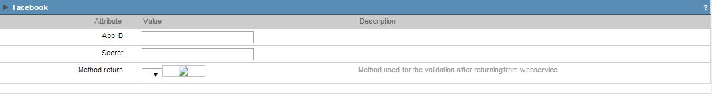
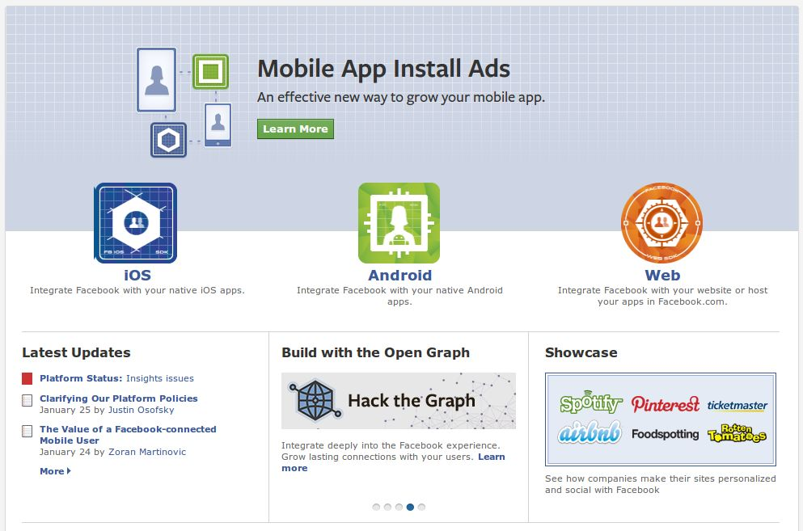
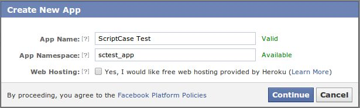

Facebook

Image1: Facebook authentication Fields.
When creating a Facebook Authentication Button, you need to fill these fields:
- App ID - Facebook Application ID. This Id will be given by the Facebook Developer's page.
- Secret - Facebook service will give you a secret key to enable your application to run on a website.
- Method return - Method to be ran when Facebook service return the data requested.

Image2: Facebook developpers page. (01/29/2013)
To create Facebook application and receive your key and secret for your website, you must follow these steps:
- Login to your Facebook account
- Go to https://developers.facebook.com/apps and register your account
- Click on + Create New App
- Enter your APP Display Name, App Name Space and click on continue.

Image3: App Name and Namespace
Enter your SC application details and save changes.
On the top of the page you can find your APP ID and APP Secret for your SC application only.

Image4: Website details
You can use this APP ID and App Secret to connect this SC application to Facebook.